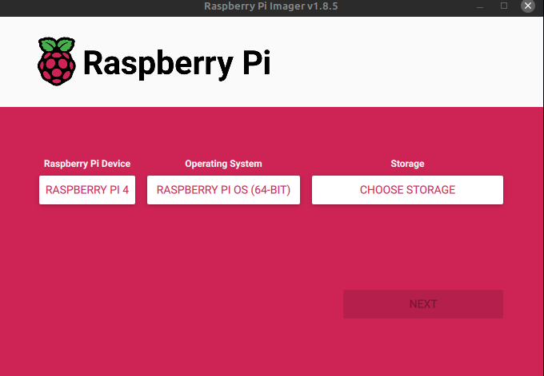
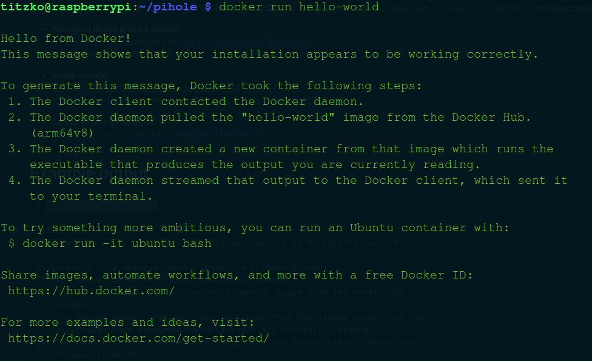
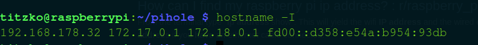

Setup Pi-Hole for Your Home Network
What is Pi-Hole?
Pi-hole is a powerful network-wide ad blocker that acts as a DNS sinkhole for your entire network. Unlike traditional browser-based ad blockers that work on a single device, Pi-hole operates at your network level, providing protection for all connected devices.
Advantages of Pi-Hole
- Works for all your devices in the network with a single central setup.
- Blocks tracking domains using open-source, maintained, and constantly updated blacklists.
- Fully configurable blacklists and whitelists.
- Provides insights into your network traffic.
- Serves as a productivity tool by blocking time-wasting domains like TikTok, Twitch, or YouTube.
- Easy to set up and maintain.
Prerequisites
- Raspberry Pi
- Router of your choice
- Micro SD Card
- About 1-2 hours of time
Setup Your Raspberry Pi
First, you need to prepare your Raspberry Pi. Install Raspberry Pi OS on your Pi using the Raspberry Pi Imager. This tool allows you to install Raspberry Pi OS on a micro SD card. On some Linux distributions like Mint, Pi Imager is already preinstalled. If Pi Imager is not installed, you can download it for free from the official website here.
With Pi Imager ready, select your Raspberry Pi model (e.g., Raspberry Pi 4 Model B), the OS of your choice, and the SD card. Follow the steps of the wizard. For the Operating System, I recommend using Pi-OS as it is optimized for running on the Raspberry Pi. However, you can also choose an OS without a desktop and terminal-only if preferred.
Once you have set up your micro SD card, insert it into your Pi and power it on. Follow the installation wizard that appears on the first boot. After completing the initial setup, open a terminal to install Docker. Docker is a lightweight virtualization tool that allows us to run the Pi-Hole application in a container without worrying about external dependencies.
The easiest way to install Docker is by following the documentation from the official Docker Install Repository. Run the following two commands in your terminal. The first command downloads a shell script, and the second executes it:
curl -fsSL https://get.docker.com -o get-docker.sh
sh get-docker.shYou can test if Docker is installed successfully by running:
docker run hello-worldYou should see an output similar to this:
Setup Pi-Hole
After Docker is installed, we're ready to set up Pi-Hole. First, create a Pi-Hole directory and
subdirectories for our configurations, which will be persistent. Also, create a
docker-compose.yml
file, which will serve as the blueprint for Pi-Hole.
mkdir -p ~/pihole/etc-dnsmasq.d
mkdir -p ~/pihole/etc-pihole
touch ~/pihole/docker-compose.ymlAfter these steps, your Pi-Hole directory should look like this:

Next, modify the docker-compose.yml file. Open it with:
version: "3"
services:
pihole:
container_name: pihole
image: pihole/pihole:latest
environment:
TZ: 'Europe/Berlin'
WEBPASSWORD: 'YourPassword'
DNS1: 1.1.1.1
DNS2: 1.0.0.1
volumes:
- ./etc-pihole:/etc/pihole
- ./etc-dnsmasq.d:/etc/dnsmasq.d
ports:
- "53:53/tcp"
- "53:53/udp"
- "80:80/tcp"
- "443:443/tcp"
restart: unless-stopped
cap_add:
- NET_ADMIN
networks:
- pihole_network
networks:
pihole_network:
driver: bridge
Replace 'YourPassword' with your desired password and 'Europe/Berlin' with
your actual timezone.
Now, start Pi-Hole by running:
cd ~/pihole
docker-compose up -dCongratulations! You have successfully set up Pi-Hole. However, there are a few more steps to ensure everything works correctly. First, verify that Pi-Hole is running correctly by finding your Pi's IP address in your home network. In your terminal, run:
hostname -IYou should see an output similar to this:

The first number (e.g., 192.168.178.32) is the IP address of your Pi in your home
network. If
everything is set up correctly, you can access the Pi-Hole dashboard via
http://192.168.178.32/admin (replace 192.168.178.32 with your actual IP
address). Enter the
password you set in your docker-compose.yml to access Pi-Hole.
Adding More Blocklists
While Pi-Hole comes with default blocklists, adding more can enhance its ad-blocking and privacy capabilities. Here are some recommended blocklists to consider:
- StevenBlack's Unified Hosts: Combines multiple reputable sources into a single, unified blocklist. GitHub Repository
- ETC Hosts: Focuses on blocking ads and trackers with minimal impact on browsing performance. ETC Hosts
- AdGuard DNS: Comprehensive lists for blocking ads, trackers, phishing sites, and more. AdGuard Filtering
- Disconnect.me: Provides blocklists targeting tracking, malware, and unwanted content. Disconnect.me
- Malware Domain List: Specifically blocks domains known to distribute malware. Malware Domain List
To add these blocklists to your Pi-Hole setup, follow these steps:
- Log in to the Pi-Hole dashboard.
- Navigate to Group Management > Adlists.
- Click on the Add button.
- Enter the URL of the desired blocklist.
- Provide a description for the blocklist (optional).
- Click Add to include the blocklist.
- After adding all desired blocklists, click Update Gravity to apply the changes.
Router Configuration
To ensure that Pi-Hole functions correctly across your network, it's crucial to assign your Raspberry Pi a static IP address outside of your router's DHCP range. This prevents IP address conflicts and ensures that your Pi-Hole remains consistently reachable by all devices on your network. Additionally, configuring your router to use Pi-Hole as the primary DNS server directs all DNS queries through Pi-Hole for effective ad blocking and tracking prevention.
Step 1: Check Your Router's DHCP Range
Before assigning a static IP to your Raspberry Pi, you need to determine the DHCP range configured on your router. This range defines the pool of IP addresses that your router can assign to devices automatically. By selecting a static IP outside this range, you avoid potential conflicts where both the router and the Pi attempt to assign the same IP to different devices.
To check the DHCP range on a Fritz!Box 7530:
- Log in to your Fritz!Box interface by navigating to
http://fritz.boxin your web browser. - Enter your Fritz!Box password when prompted.
- Navigate to Home Network > Network Overview.
- Click on Network Settings or a similar option to view DHCP settings.
- Note the starting and ending IP addresses of the DHCP pool. For example, your DHCP range might
be from
192.168.178.20to192.168.178.200.
Step 2: Assign a Static IP to Your Raspberry Pi
With the DHCP range identified, choose an IP address for your Raspberry Pi that falls outside this
range. For example, if your DHCP pool is from 192.168.178.20 to
192.168.178.200, you might select 192.168.178.2 for your Pi.
On your Raspberry Pi, follow these steps to set a static IP address by editing the
/etc/dhcpcd.conf file:
Open the dhcpcd.conf file with sudo privileges:
sudo nano /etc/dhcpcd.conf
In the opened dhcpcd.conf file, add the following lines.
Replace wlan0 with eth0 if you're using a wired connection:
interface wlan0
static ip_address=192.168.178.2/24
static routers=192.168.178.1
static domain_name_servers=1.1.1.1- interface wlan0: Specifies the network interface to configure. Use
wlan0for wireless oreth0for wired connections. - static ip_address=192.168.178.2/24: Assigns the static IP address
192.168.178.2with a subnet mask of255.255.255.0(/24in CIDR notation) to your Raspberry Pi. - static routers=192.168.178.1: Sets the default gateway to
192.168.178.1, typically your router's IP address. - static domain_name_servers=1.1.1.1: Configures the DNS server to
1.1.1.1(Cloudflare's public DNS) for name resolution.
To apply the changes, reboot your Raspberry Pi with the following command:
sudo reboot
In your Fritz!Box interface, navigate to Home Network > Network
> Network Connections. Locate your Raspberry Pi in the list of connected devices
and click on the edit button next to it. In the device settings, configure the Pi's IP address as
static by entering the same IP address you set on your Pi (e.g., 192.168.178.2).
Additionally, ensure that the checkbox labeled "Always assign the same IPv4 address to this
network device" is checked. This step guarantees that your Raspberry Pi retains the
assigned static IP address, preventing any potential IP conflicts and ensuring consistent
accessibility of Pi-Hole across your network.
Step 3: Configure Your Router to Use Pi-Hole as the DNS Server
After setting a static IP on your Raspberry Pi, you need to configure your router to use this IP as the primary DNS server. This ensures that all DNS queries from devices on your network pass through Pi-Hole for ad blocking and tracking prevention.
Follow these steps in your Fritz!Box 7530 interface:
- Log in to your Fritz!Box interface by navigating to
http://fritz.boxin your web browser. - Enter your Fritz!Box password when prompted.
- Navigate to Internet > Account Information.
- Click on the DNS Server tab.
- Select Use other DNSv4 servers.
- Enter your Pi's static IP address (e.g.,
192.168.178.2) as the primary DNS server. - Add
1.1.1.1as the fallback DNS server (Cloudflare's public DNS). - Click Save to apply the changes.
And thats already it. Note that you should probably setup a firewall and ssh-connection for your pi.